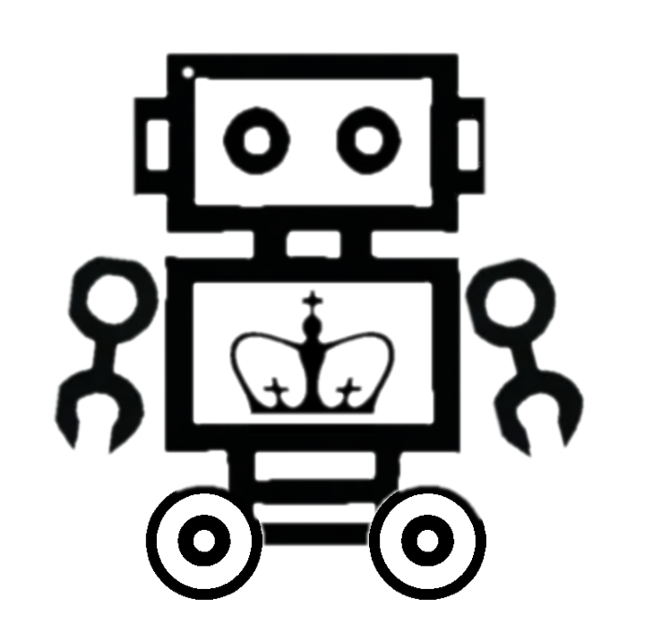
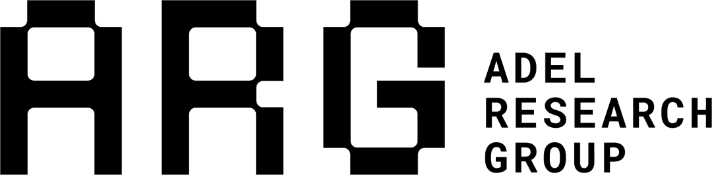
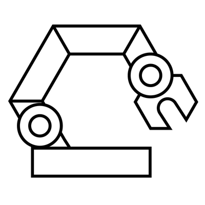
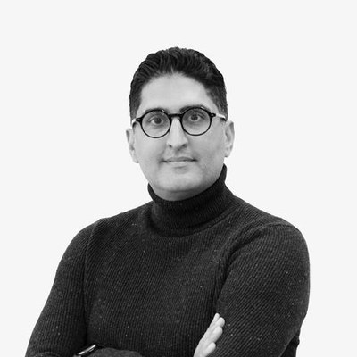
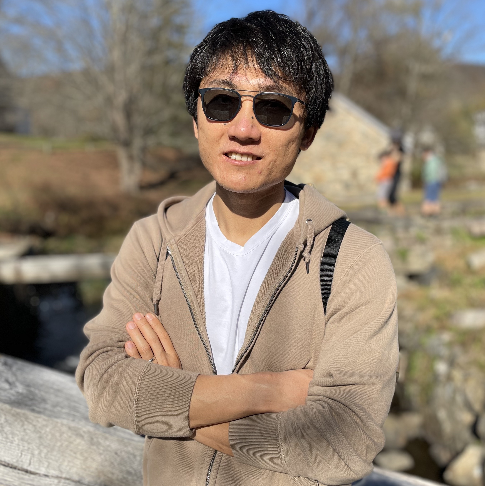
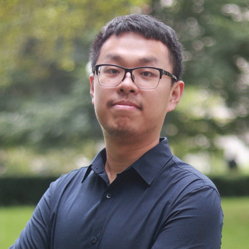
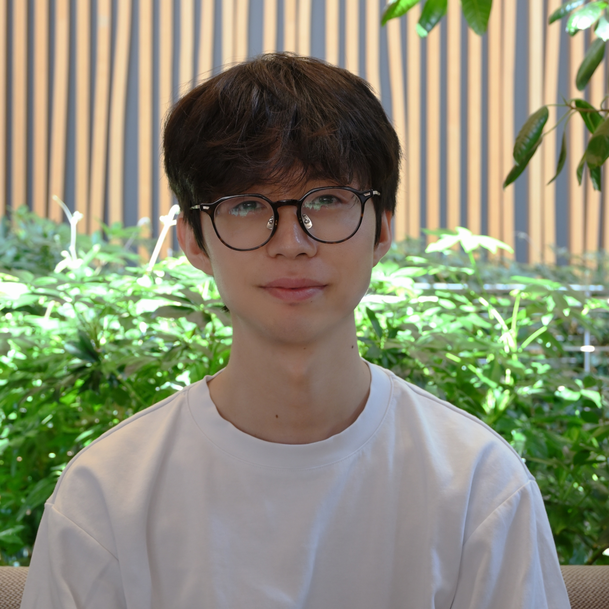
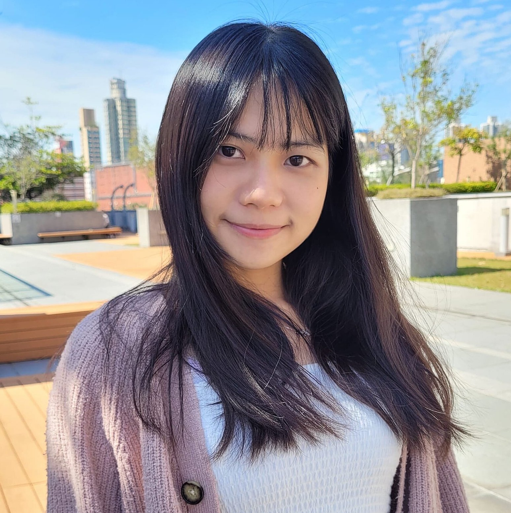
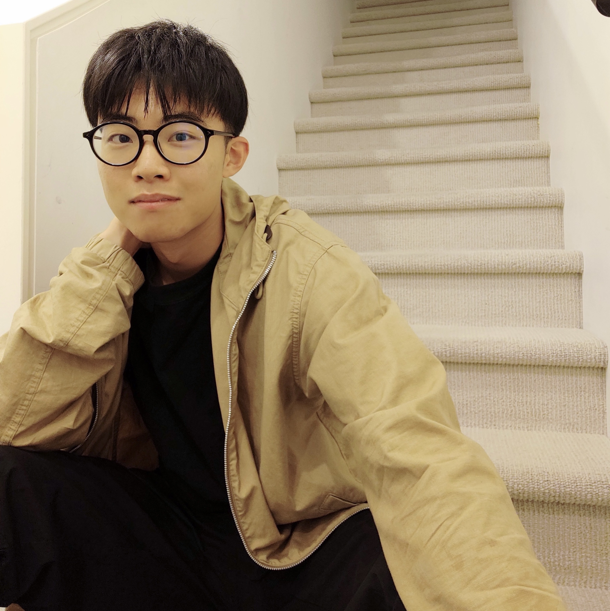

Inaugural Edition
Columbia University · Princeton University · Stony Brook University
ICON Lab
Columbia University

Adel Research Group
Princeton University

CROSS Lab
Stony Brook University
Date
Friday, November 20, 2026
Location
Columbia University, New York, NY
The Mini Construction Robotics Workshop brings together research groups from Columbia University, Princeton University, and Stony Brook University for a day of research presentations and round table discussion on construction robotics. Sessions cover perception, sensing, and robot learning, as well as adaptive manipulation and human–robot collaboration.
| 9:30 – 10:00 AM | Breakfast / Coffee |
| 10:00 – 10:30 AM |
Brief Introductions by PIs Columbia, Stony Brook, and Princeton (10 minutes each) |
| 10:30 AM – 12:30 PM | Session 1: Perception, Sensing, and Robot Learning |
| 10:30 – 11:00 |
Toward Adaptive Construction Robotics: From 3D Perception to Robot Manipulation Zhaofeng Hu (Stony Brook) |
| 11:00 – 11:30 |
Active Robotic Sensing for Indoor Environmental Quality Assessments Weijia Cai (Columbia) |
| 11:30 – 12:00 |
Training Construction Robots with Heterogeneous Data Lei Huang (Columbia) |
| 12:00 – 12:30 |
Visuomotor Policy Learning for Contact-Rich Robotic Manipulation under Fabrication Uncertainty Daniel Ruan & Salma Mozaffari (Princeton) |
| 12:30 – 1:30 PM | Lunch |
| 1:30 – 3:30 PM | Session 2: Adaptive Manipulation and Human–Robot Collaboration |
| 1:30 – 2:00 |
Diffusion Policy-Guided Adaptive Control for Contact-Rich Robotic Assembly in Construction Roman Ibrahimov & Salma Mozaffari (Princeton) |
| 2:00 – 2:30 |
Towards Intelligent Robotic Deconstruction through Human–Robot Collaboration Fanru Gao (Stony Brook) |
| 2:30 – 3:00 |
Egocentric Vision for Human-Robot Collaboration in Construction Christine Suen (Columbia) |
| 3:00 – 3:30 |
Adaptive Human-Robot Collaboration for Masonry Construction Under Material and Assembly Uncertainty Jutang Gao & Meng An (Princeton) |
| 3:30 – 4:00 PM | Coffee Break |
| 4:00 – 5:00 PM |
Roundtable Discussion Challenges and opportunities in bringing robots onsite |
| 5:00 – 5:30 PM |
ICON Lab Tour |
| 5:30 – 8:00 PM | Dinner |

Arash Adel
Princeton University
Ci-Jyun (Polar) Liang
Stony Brook University

Zhengbo Zou
Columbia University

Lei Huang
Columbia University

Weijia Cai
Columbia University

Christine Suen
Columbia University

Harry Zhang
Columbia University
Seeley W. Mudd Building
Columbia University, 500 W 120th St, New York, NY 10027
Open in Google Maps